机器学习 by 李宏毅(8-2)
Flow-based model
Generative Model
- Component-by-component (Auto-regressive Model)
- What is the best order for the components?
- 通常从左上角开始生成 pixel
- Slow generation
- What is the best order for the components?
- Variational Auto-encoder
- Maximizing a lower bound
- GAN
- Unstable training
Generator
A generator G is a network. The network defines a probability distribution \(P_G\)
\(P_G\)与\(P_{data}\) 越接近越好，具体来说：
\[ \{x^1, x^2,x^3,...,x^m\}\ from\ P_{data} \]
\[ G^*=arg \underset{G}{max}\sum_{i=1}^{m} logP_G(x^i) \]
等价于 Minimizing，推导见 8-1 \[ arg\underset{G}{min}KL(P_{data}||P_G) \]
由于\(P_G\)非常复杂，很难知道如何 Maximizing \(G^*\)，Flow-based model 可以直接 Optimize
Flow-based model
Math Background
Jacobian Matrix---雅克比
\[ x = \begin{bmatrix}x_1 \\x_2\end{bmatrix}\text{, z}= \begin{bmatrix}z_1 \\z_2 \end{bmatrix} \]
\[ x = f(z)\text{, z=}f^{-1}(x) \]
\[ J_f = \begin{bmatrix}\frac{\partial x_1}{\partial z_1} \space \space \frac{\partial x_1}{\partial z_2} \\ \frac{\partial x_2}{\partial z_1}\space \space \frac{\partial x_2}{\partial z_2} \end{bmatrix}\text{, .} J_{f^{-1}} = \begin{bmatrix} \frac{\partial z_1}{\partial x_1} \space \space \frac{\partial z_1}{\partial x_2} \\ \frac{\partial z_2}{\partial x_1}\space \space \frac{\partial z_2}{\partial x_2} \end{bmatrix} \]
\[ J_f*J_{f^{-1}} = I \]
Determinant
行列式-det(Matrix)

Change of Variable Theorem
假设 Generator 为 \(x=f(z)\)，input distribution 为\(\pi(z)\)，output distribution 为 \(p(x)\)
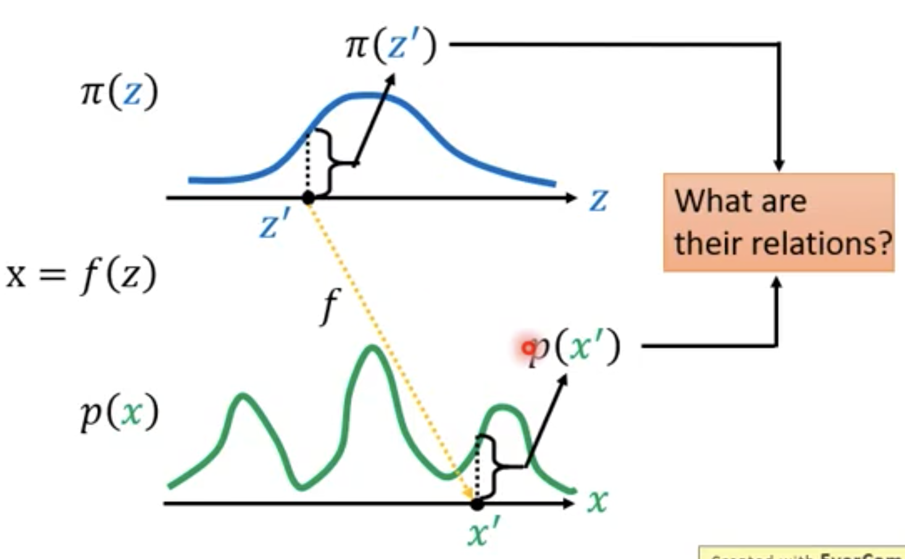
distribution 的面积恒为1，利用微积分求出二者的关系
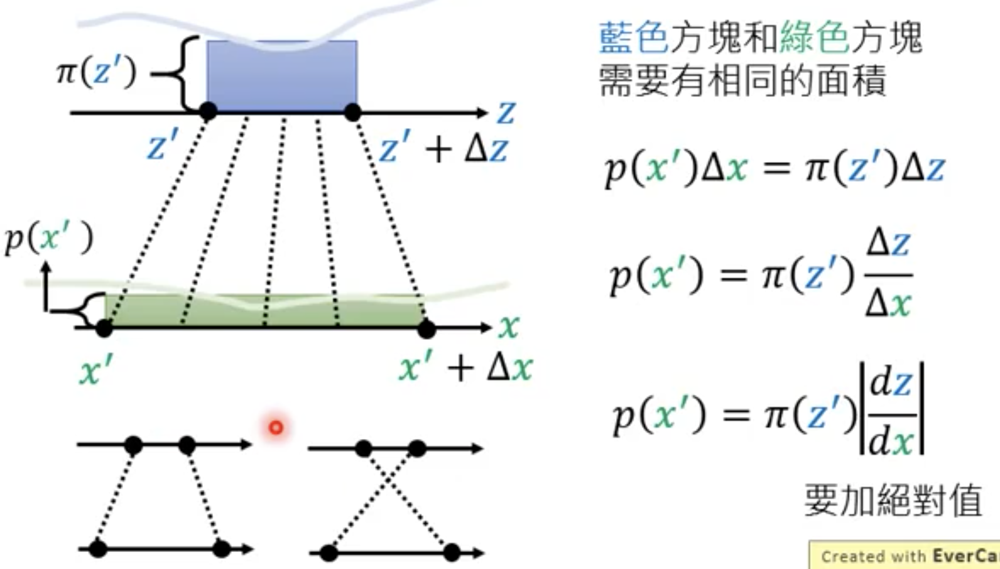
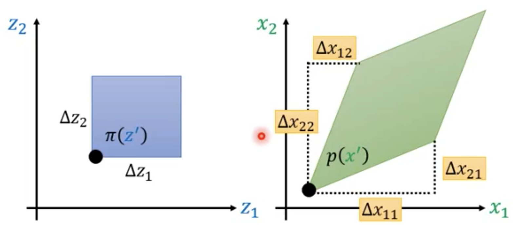 \[ p\left(x^{\prime}\right)\left|\operatorname{det}\left[\begin{array}{ll}\Delta x_{11} & \Delta x_{21} \\\Delta x_{12} & \Delta x_{22}\end{array}\right]\right|=\pi\left(z^{\prime}\right) \Delta z_{1} \Delta z_{2} \]
\[ p\left(x^{\prime}\right)\left|\frac{1}{\Delta z_{1} \Delta z_{2}}\operatorname{det}\left[\begin{array}{a}\Delta x_{11} & \Delta x_{21} \\\Delta x_{12} & \Delta x_{22}\end{array}\right]\right|=\pi\left(z^{\prime}\right) \]
\[ p\left(x^{\prime}\right)\left|\operatorname{det}\left[\begin{array}{a}\frac{\Delta x_{11}}{\Delta z_1} & \frac{\Delta x_{21}}{\Delta z_1} \\\frac{\Delta x_{12}}{\Delta z_2} &\frac{\Delta x_{22}}{\Delta z_2}\end{array}\right]\right|=\pi\left(z^{\prime}\right) \]
\[ p\left(x^{\prime}\right)\left|\operatorname{det}\left[\begin{array}{ll}\partial x_{1} / \partial z_{1} & \partial x_{2} / \partial z_{1} \\ \partial x_{1} / \partial z_{2} & \partial x_{2} /\partial z_{2} \end{array}\right]\right|=\pi\left(z^{\prime}\right) \]
\[ p\left(x^{\prime}\right)\left|\operatorname{det}\left[\begin{array}{ll}\partial x_{1} / \partial z_{1} & \partial x_{1} / \partial z_{2} \\ \partial x_{2} / \partial z_{1} & \partial x_{2} / \partial z_{2} \end{array}\right]\right|=\pi\left(z^{\prime}\right) \]
\[ p\left(x^{\prime}\right)\left|\operatorname{det}[J_f]\right|=\pi\left(z^{\prime}\right) \]
\[ p\left(x^{\prime}\right)=\pi\left(z^{\prime}\right)\left|\operatorname{det}[J_{f^{-1}}]\right|\text{, x=f(z)} \]
Flow-based model
\[ G^*=arg \underset{G}{max}\sum_{i=1}^{m} logP_G(x^i)\text{, x}=G(z) \]
\[ p_G\left(x^{i}\right)=\pi\left(z^{i}\right)\left|\operatorname{det}[J_{G^{-1}}]\right| \text{, z}^i=G^{-1}(x^i) \]
\[ logp_G\left(x^{i}\right)=log\pi\left(G^{-1}(x^i)\right)+log\left|\operatorname{det}[J_{G^{-1}}]\right| \]
we need compute: \(det[J_{G^{-1}}]\), \(G^{-1}\)
G 可逆，x 和 z 的大小必须一样，G的限制比较大
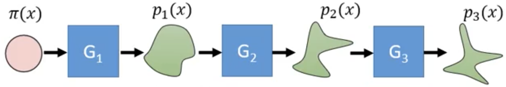 \[ p_1\left(x^{i}\right)=\pi\left(z^{i}\right)\left|\operatorname{det}[J_{G_1^{-1}}]\right| \]
\[ p_2\left(x^{i}\right)=\pi\left(z^{i}\right)\left|\operatorname{det}[J_{G_1^{-1}}]\right|\left|\operatorname{det}[J_{G_2^{-1}}]\right| \]
\[ p_k\left(x^{i}\right)=\pi\left(z^{i}\right)\left|\operatorname{det}[J_{G_1^{-1}}]\right|...\left|\operatorname{det}[J_{G_k^{-1}}]\right| \]
\[ logp_k\left(x^{i}\right)=log\pi\left(z^{i}\right)+\sum_{h=1}^{k}log\left|\operatorname{det}[J_{G_h^{-1}}]\right| \]
\[ z^i=G^{-1}(...G^{-k}(x^i)) \]
当 z = 0 时，\(\pi (z)\) 取得最大值
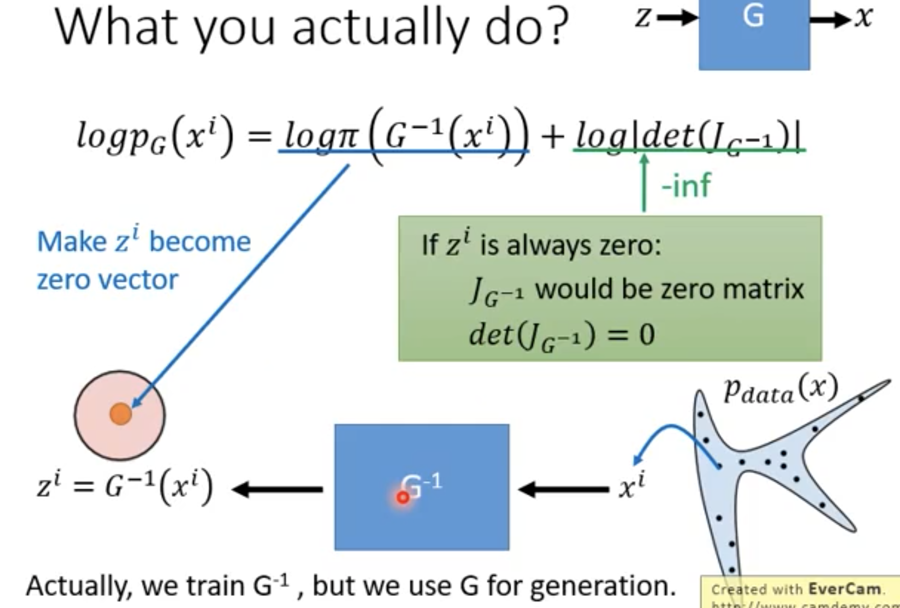
How to design G
- Input ：z vector
- output：x vector
- Generator：G
\[ x=G(z) \]
\[ J_{G}=\left[ \begin{array}{ll}\partial x_{1} / \partial z_{1}& \partial x_{1} / \partial z_{2} & ... & \partial x_{1} / \partial z_{D} \\\partial x_{2} / \partial z_{1} & \partial x_{2} / \partial z_{2}&...&\partial x_{2} / \partial z_{D}\\...&...&...&...\\\partial x_{D} / \partial z_{1} & \partial x_{D} / \partial z_{2} & ...& \partial x_{D} / \partial z_{D}\end{array} \right] \]
Couping Layer and comput \(G^{-1},J_{G}\)
Coupling Layer 将 z 分割为 前d维和后D-d 维两个vector，运算过程如图所示：
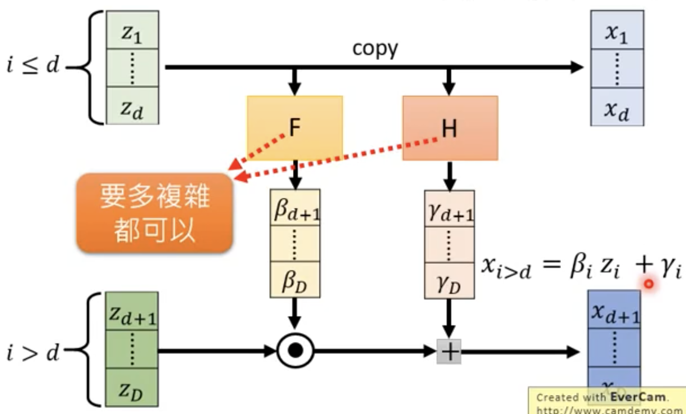
其中，F，H 为任何类型的Model 或者 Function
- How to compute \(G^{-1}\)
\[ z_{i\le d} = x_{i\le d}\text{, 直接 copy 前d维} \]
\[ \beta_{d\le i \le D} = F(z_{i\le d})\text{, , }\gamma_{d\le i\le D}=H(z_{i\le d}) \]
\[ z_{d\le i\le D}=\frac{x_{d\le i\le D}-\gamma_{d\le i\le D}}{\beta_{d\le i\le D}} \]
- How to compute \(J_{G}\)?
\[ p\left(x^{\prime}\right)\left|\operatorname{det}[J_G]\right|=\pi\left(z^{\prime}\right) \]
\[ x_{i\le d} |det[J_{G_{d\times d}}]| = z_{i\le d}\text{, 即}J_{G_{d\times d}} = I_{d\times d} \]
\[ x_{d\le i\le D} = \beta_{d\le i\le D}·z_{d\le i\le D}+\gamma_{d\le i\le D} \]
\[ J_{G_{(D-d) \times (D-d)}}=Diagonal\left[ \begin{array}{ll}\beta_d & 0 & ... & 0 \\0 & \beta_{d+1} &...&0\\...&...&...&...\\0 & 0 & ...& \beta_D \end{array} \right] \]
\[ det(J_G) = det \left( \begin{array}{ll} I_{d\times d} & O \\ ? & Diagonal \end{array} \right) = det(Diagonal) = \beta_d\beta_{d+1}...\beta_{D} \]
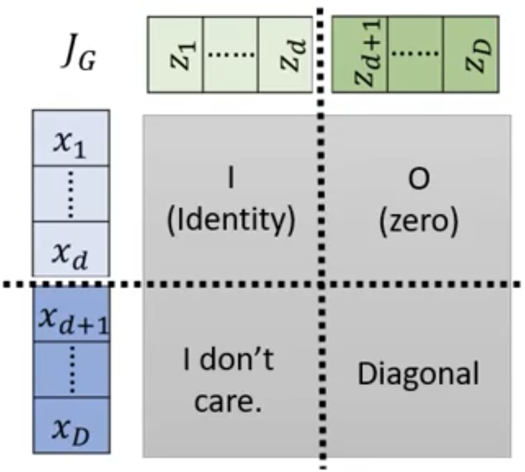
- Stacking
堆叠如图所示，会出现前 d 维的 input 与最终的output 的前d维完全一样，只是从 π(z) sample 到的噪声
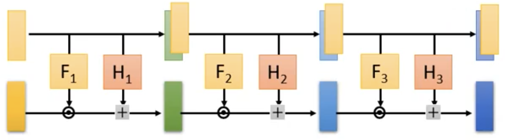
所以可以将 F，H的方向
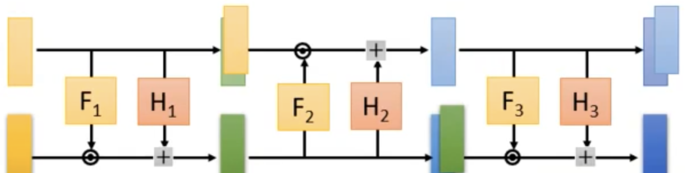
1X1 Convolution
用在 GLOW model 中
- theory
每个 pixel 的 RGB vector 乘以 3X3的 Matrix 矩阵得到新的 pixel
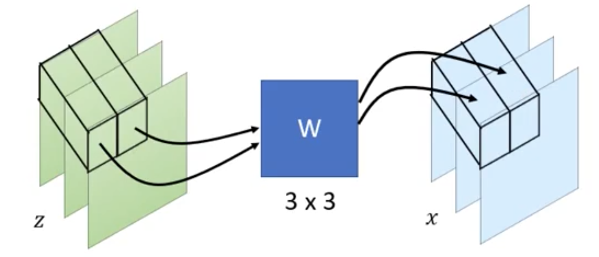
W need to be learned，can shuffle the channels.
if W is a invertible matrix, it is easy to compute \(W^{-1}\). because a matrix uninvertible only when it's determinant is 0 whitch hardly ever happens \[ x = f(z) = Wz \]
\[ J_{f}=\left[ \begin{array}{ll}\partial x_{1} / \partial z_{1}& \partial x_{1} / \partial z_{2} & \partial x_{1} / \partial z_{3} \\\partial x_{2} / \partial z_{1} & \partial x_{2} / \partial z_{2}&\partial x_{2} / \partial z_{3}\\\partial x_{3} / \partial z_{1} & \partial x_{3} / \partial z_{2} & \partial x_{3} / \partial z_{3}\end{array} \right] = \left[ \begin{array}{ll} w_{11}& w_{12} & w_{13} \\ w_{21} & w_{22} & w_{23}\\w_{31} &w_{32}& w_{33}\end{array} \right]=W \]
假设input 为 d x d 的RGB image，每一个 RGB pixel 对应一个 W
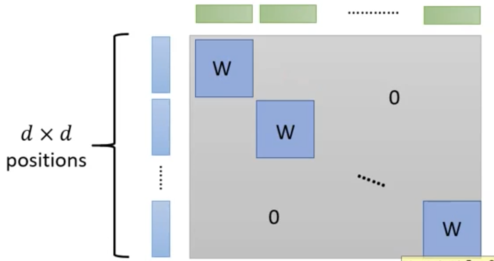
得到整个 Image 的 determinant： \[ det(input) = (det(W))^{d\times d} \]
Application
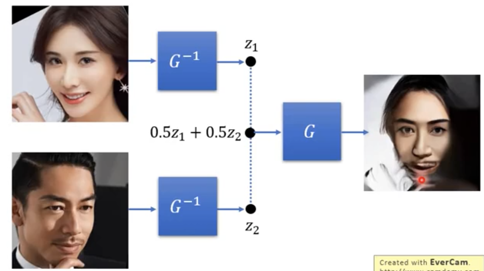
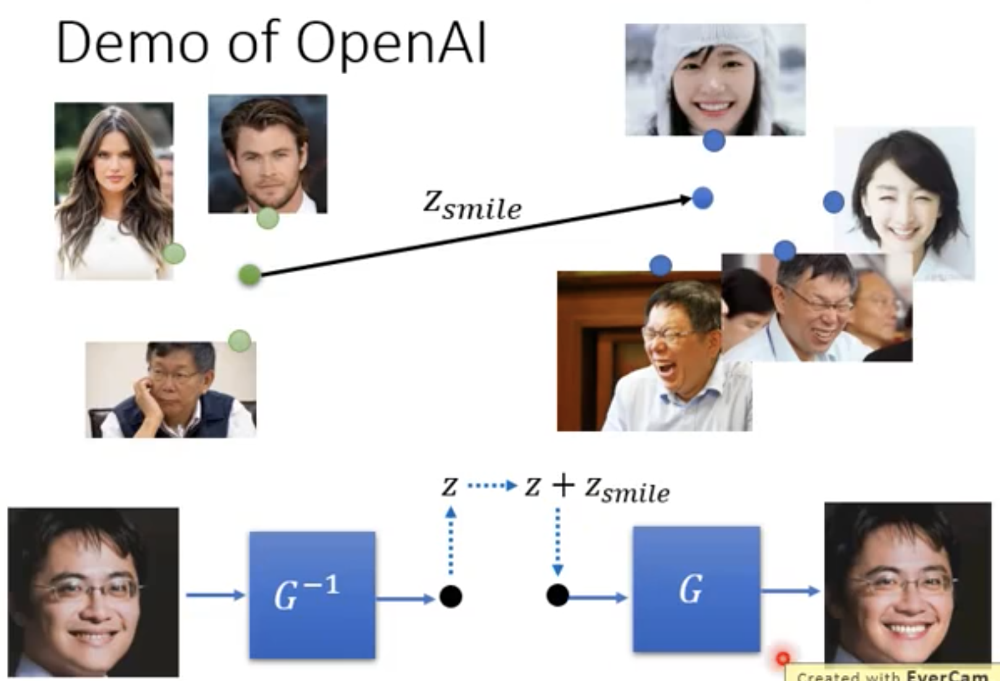